Vi har retter tilpasset både ❀ vegetarianere ❀ og kjøttelskere.
Litt trygt og litt nytt slik at dere sammen kan få nyte mangfoldige retter.
Foretter
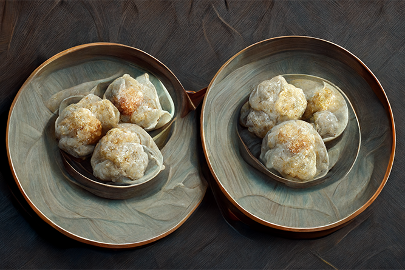
❀ Dumplings med kikerter ❀
Tynne dumplings fylt med fersk koriander og kikerter
A: Egg | Hvete
95,-
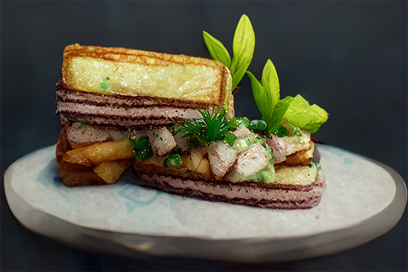
Club Sandwich
Liten club sandwich med brioche-bunn, avokado og vaktelfilet
A: Egg | Hvete | Laktose
45,-
Hovedretter
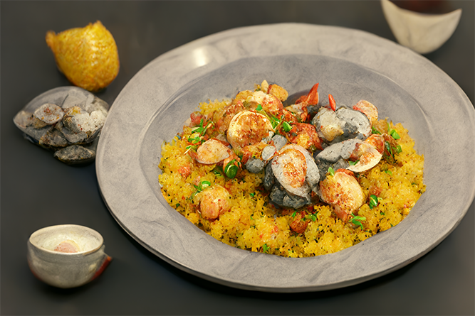
❀ Ratatouille med grønn pesto ❀
Fransk rett med aubergine, squash og tomater servert med grønn pesto
A: Sennepsfrø
145,-
Paella med sjømat
Spansk risrett servert med blåskjell, krabbe og scampi
A: Fisk | Skalldyr | Selleri
195,-
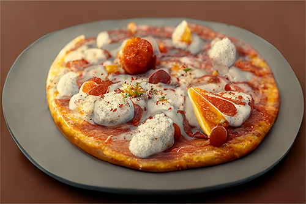
Pizza Pepperoni
Hjemmelaget Pizza med mozarellaost, pepperoni og tomater
A: Hvete | Laktose | Selleri | Sennepfrø
145,-
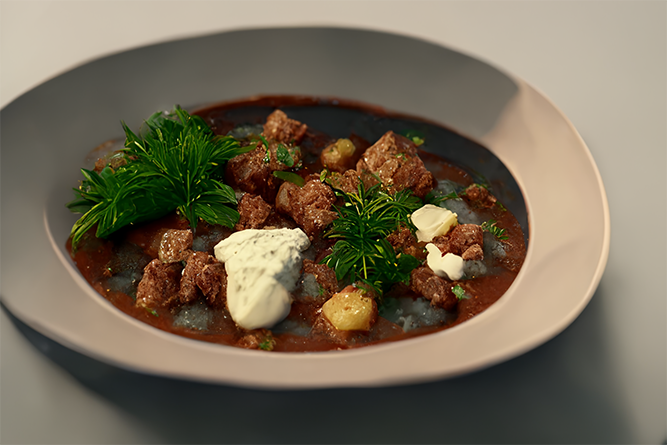
Gulasj med biff
Ungarsk gulasj med biff, tomat- og paprikasaus.
A: Selleri
165,-
Dessert
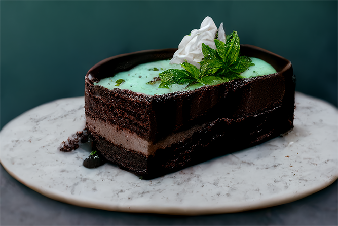
Mynte og- sjokoladekake
Saftig sjokoladekake med myntekrem og sjokoladesaus
A: Egg | Hvete | Laktose
65,-
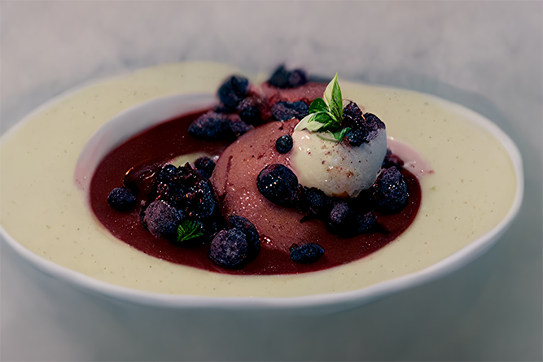
Panna Cotta
Autentisk panna cotta med bringebær, blåbær og vaniljeiskrem
A: Laktose
65,-
Om oss
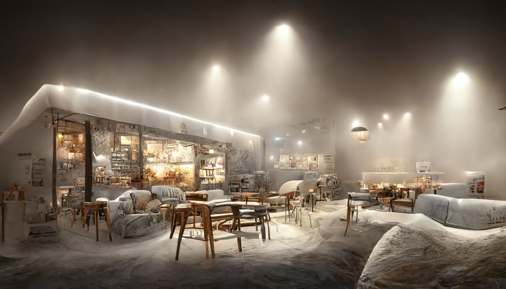
Hvis du har lyst på en matbit eller bare en kopp kaffe i hyggelige omgivelser er CafeZaurus stedet for deg.
Våre kokker har erfaring fra noen av verdens beste kjøkken, og serverer smaksrike retter over en lav sko.
Kjernen av vår filosofi er at god mat av høy kvalitet ikke trenger å være hverken dyr eller pretensiøs.
Vi tilbyr derfor en fokusert meny med retter som garanterer en smaksopplevelse du sent vil glemme - uten at det koster skjorta.
Du finner oss på Kråkstad. Kom innom da vel!
Møt menneskene bak maten
Hanne Hamburger
Hanne Hamburger startet CafeZaurus i 2013 da hun returnerte fra Paris etter 10 år som kokk i noen av verdens beste restauranter.
Med sine erfaringer fra verdens kullinære hovedstad kom hun tilbake til hjemstedet Stovner med ett mål i tankene:
Tradisjonell europeisk mat servert på en moderne måte i avslappede omgivelser.
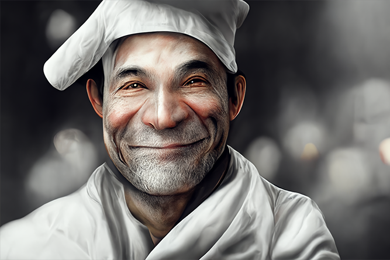
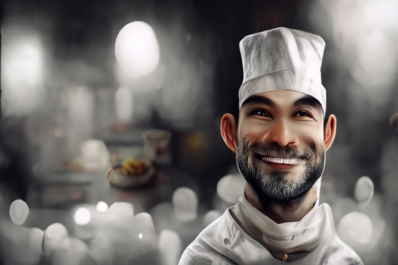
Baptiste Bernaise
Sjefskokken Baptiste har over 30 års erfaring i det franske kjøkken.
Sammen med sønnen Bernard drev han restauranten La Pomme i Carcassonne.
Bernard Bernaise
Bernard er sønnen til Baptiste. Han begynte å lære av sin far i tidlig alder, og har siden da utviklet seg til å bli en fremragende kokk.
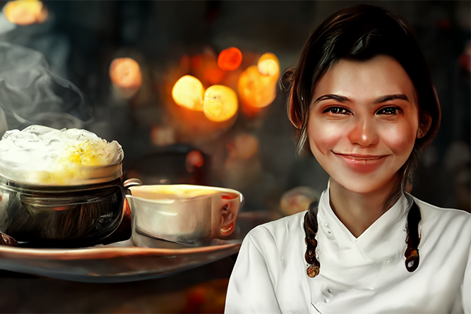
Solveig Suppe
Selv om Solveig er nyutdannet kokk, har hun imponert oss med sin modne tinærming til matlaging.
Det tok ikke lang tid før vi skjønte at vi har like mye å lære av henne som hun har å lære av oss.
Tonje Tiramisu
Tonje er vår egen barista og kaffe-spesialist. For Tonje er kaffe en livsstil, og hun vil altid sørge for at du har noe godt i koppen.